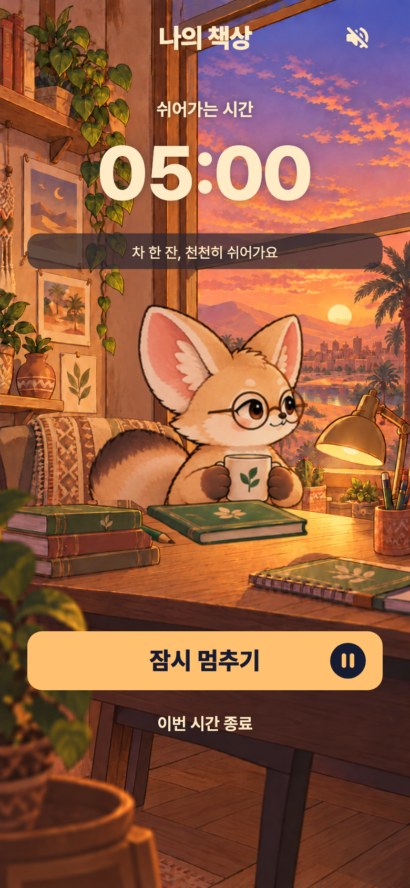
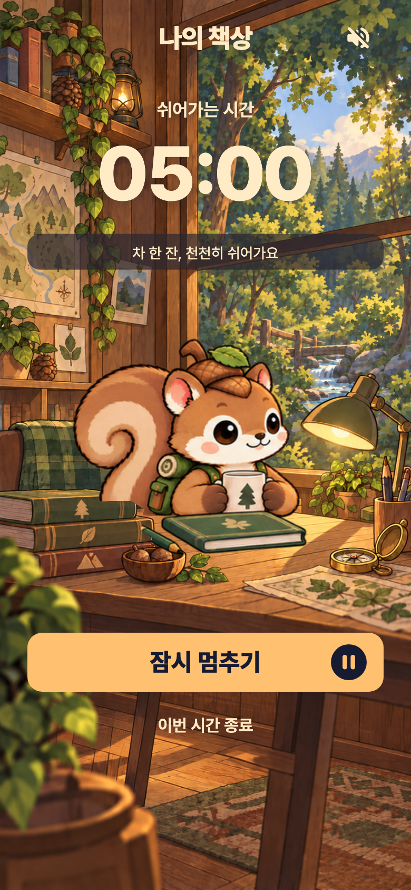

사막여우와 다람쥐가 풍경을 바라보며 천천히 쉬어요.잔을 감싸고 쉬기 → 한 모금 → 잔을 내리고 여유롭게 머무르기.
22초에 한 번 차를 마시는 전체 반복 영상이에요. 처음에는 창밖을 바라보는 시간이 길어요.
둥근 안경 너머로 풍경을 보고, 두 손으로 잔을 들어요.
도토리 모자를 쓴 채 숲을 바라보다 따뜻한 차를 마셔요.


앱에서는 친구 → 사막여우 또는 다람쥐 → 적용 후 휴식 시간에 볼 수 있어요. 친구 미리보기에서도 이 동작이 보여요.펭귄·해달 모션 보기 · 제작 기록